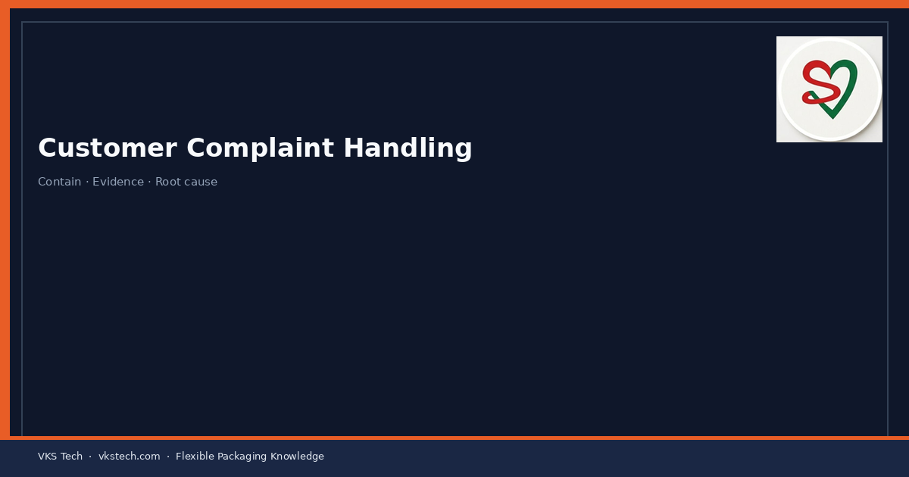
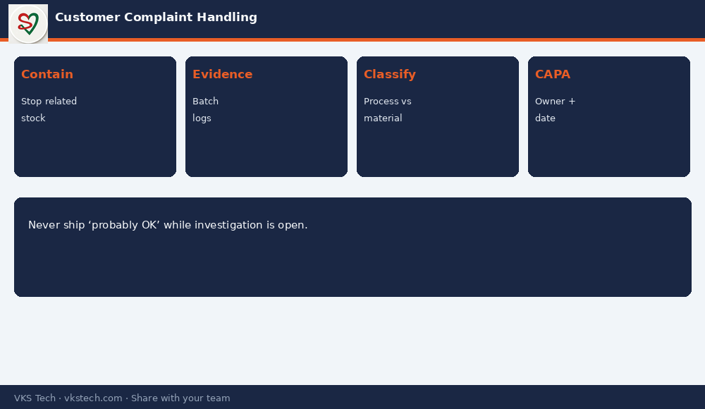

📞 A Customer Complaint Is Not a Debate. It Is a Timed Investigation with Evidence, Containment and a Real Root Cause.
📖 11-min read · Quality systems · QC + PPC + Sales
Flexible packaging complaints often arrive late — after the pack is filled or on shelf. Speed of containment matters more than perfect language. This article gives a plant sequence that protects the customer and the factory reputation.
📌 Sequence
- 1. Contain — stop related WIP and open stock
- 2. Evidence — samples, batch IDs, process logs, photos
- 3. Classify — process vs material vs handling vs design
- 4. Root cause — one primary cause, not a list of maybes
- 5. Corrective + preventive — with owner and date

💡 Discipline: Never ship “probably OK” material while the investigation is open. Containment is cheaper than a second complaint.
📞 कस्टमर शिकायत बहस नहीं है। यह सबूत, कंटेनमेंट और असली रूट कॉज़ के साथ समयबद्ध जाँच है।
📖 11-मिनट पढ़ें · क्वालिटी सिस्टम
💡 अनुशासन: जाँच खुली हो तो “शायद ठीक” मटेरियल न भेजें।